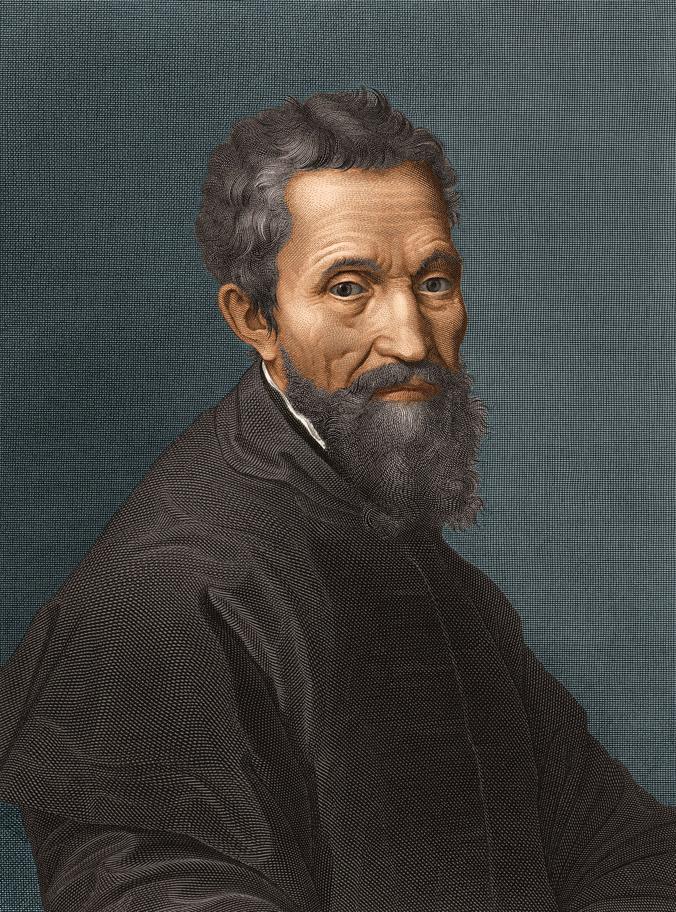

Nascita e formazione: Nato il 6 marzo 1475 a Caprese, in Toscana. Fin da giovane mostra talento per il disegno e la scultura. Studia presso la bottega del pittore Domenico Ghirlandaio e approfondisce l’arte classica a Firenze. Carriera artistica: È celebre come scultore, pittore, architetto e poeta. Tra le opere più famose: Sculture: Pietà (1498-1499, Basilica di San Pietro) e David (1501-1504, Galleria dell’Accademia di Firenze). Pittura: affreschi della Cappella Sistina in Vaticano (1508-1512), tra cui il celebre Giudizio Universale (1536-1541). Architettura: progettazione della cupola di San Pietro e lavori in vari edifici a Firenze e Roma. Carattere e stile: Conosciuto per la perfezione tecnica, il rigore anatomico e l’uso innovativo dello spazio e della prospettiva. Persona riservata e molto dedita al lavoro. Ultimi anni e morte: Continua a lavorare fino alla vecchiaia, tra sculture, progetti architettonici e poesie. Muore il 18 febbraio 1564 a Roma, lasciando un’impronta indelebile sull’arte rinascimentale.

La carriera di Michelangelo si divide in due grandi periodi:il periodo fiorentino dove ha lavorato presso la famiglia De Medici e il periodo romano dove ha lavorato principalmente per il papa